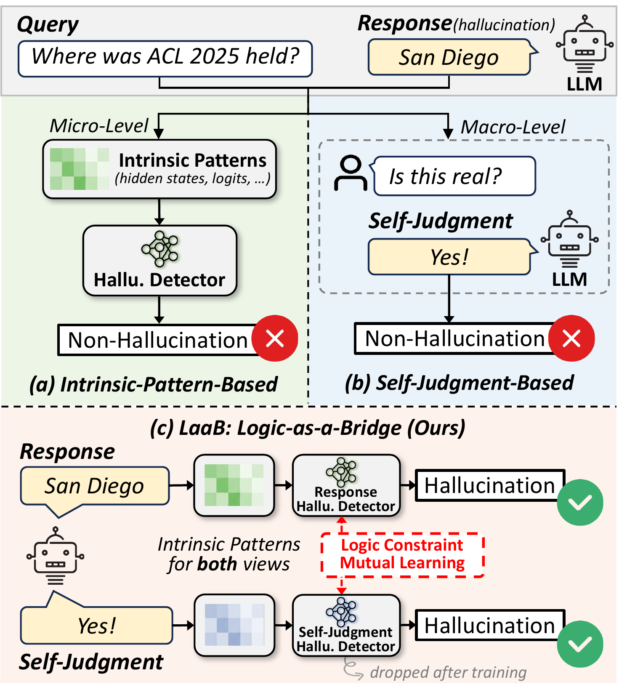
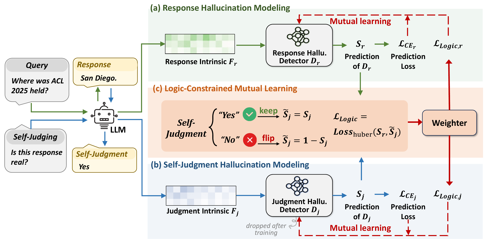
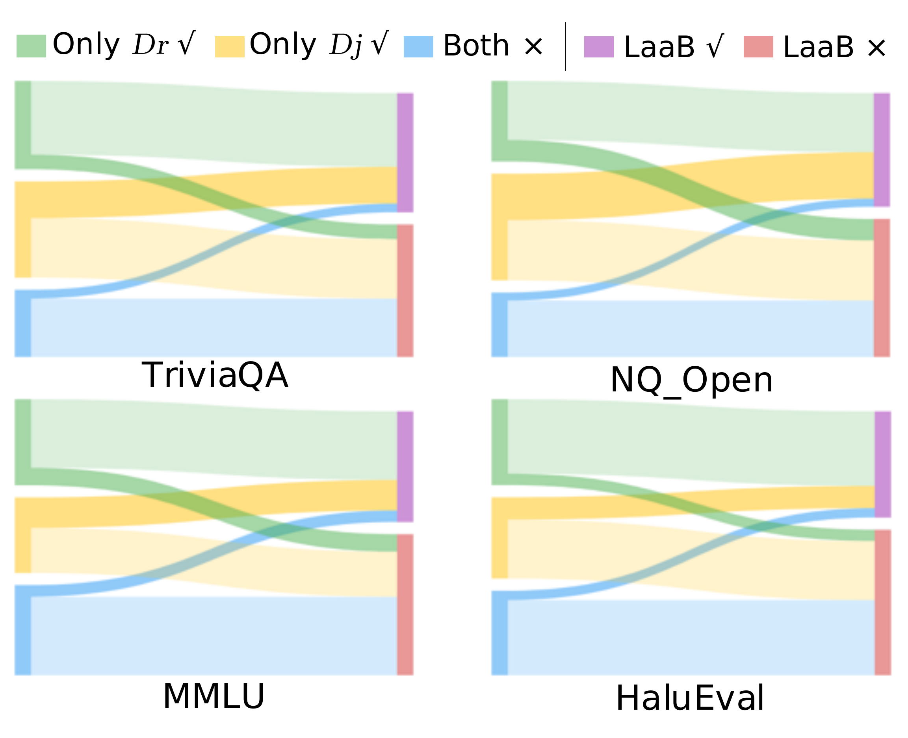
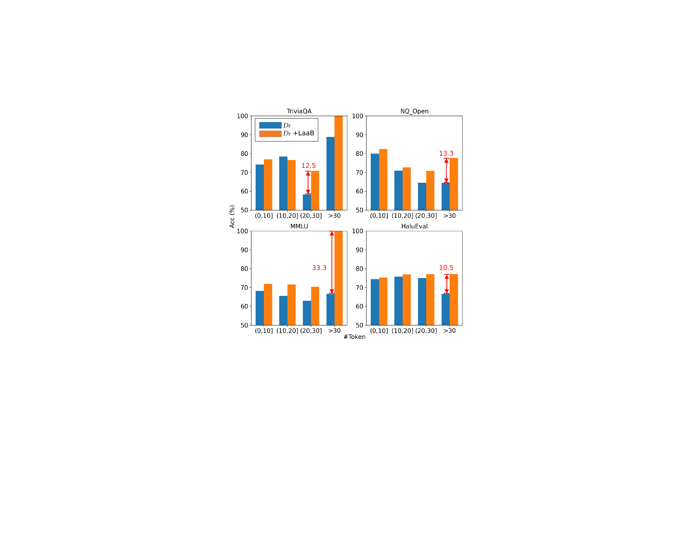

TL;DR

Comparison of existing detection paradigms (a–b) and LaaB (c). Unlike methods that rely solely on intrinsic patterns or symbolic judgments, LaaB bridges both views via logic-constrained mutual learning.
Contributions
- Concept: We propose to view the LLM's self-judgment as a special response that can itself be checked for hallucination, whose result bridges a logical constraint enabling integration of dual-view predictions.
- Method: We design LaaB, which bridges prediction signals from both intrinsic patterns and self-judgments, and builds a mutual learning framework for accurate hallucination detection.
- Performance: Experiments on 4 datasets, across 4 LLMs, against 8 baselines show LaaB effectively enhances hallucination detection without significant additional inference cost.
Method

Overall architecture of LaaB. (a) Response Hallucination Modeling extracts intrinsic features from the response generation. (b) Self-Judgment Hallucination Modeling introduces a meta-judgment process on the verbal judgment. (c) Logic-Constrained Mutual Learning bridges both views via logical consistency.
Main Results
Performance comparison on 4 benchmarks × 4 LLMs × 8 baselines. Blue rows indicate LaaB-enhanced versions. Bold = LaaB outperforms its base. Underlined = best in the LLM group.
| LLM | Method | TriviaQA | MMLU | NQ_Open | HaluEval | Average | |||||
|---|---|---|---|---|---|---|---|---|---|---|---|
| macF1 | Acc | macF1 | Acc | macF1 | Acc | macF1 | Acc | macF1 | Acc | ||
| Llama-3.1-8B | SAPLMA | 77.05 | 79.87 | 69.96 | 70.75 | 73.01 | 75.15 | 75.70 | 75.88 | 73.93 | 75.41 |
| +LaaB | 78.74 | 82.09 | 71.77 | 73.25 | 73.10 | 77.13 | 77.20 | 77.60 | 75.20 | 77.52 | |
| Logits Lens | 72.50 | 74.81 | 65.27 | 66.07 | 62.63 | 63.26 | 72.21 | 72.48 | 68.15 | 69.16 | |
| +LaaB | 75.11 | 78.88 | 66.72 | 70.65 | 65.72 | 68.90 | 72.29 | 73.04 | 69.96 | 72.87 | |
| Lookback Lens | 71.65 | 74.45 | 72.74 | 73.96 | 68.60 | 70.88 | 75.13 | 75.49 | 72.03 | 73.70 | |
| +LaaB | 73.58 | 77.44 | 70.96 | 72.50 | 72.63 | 75.46 | 77.00 | 77.54 | 73.54 | 75.74 | |
| Llama-3.1-70B | SAPLMA | 71.12 | 83.13 | 71.19 | 79.62 | 71.64 | 78.62 | 77.17 | 77.22 | 72.78 | 79.65 |
| +LaaB | 73.20 | 86.22 | 71.40 | 81.75 | 71.71 | 78.48 | 79.15 | 79.44 | 73.87 | 81.47 | |
| Logits Lens | 65.67 | 76.55 | 62.42 | 70.63 | 54.50 | 60.03 | 72.33 | 72.52 | 63.73 | 69.93 | |
| +LaaB | 70.23 | 84.19 | 60.18 | 72.33 | 57.21 | 71.74 | 72.07 | 72.36 | 64.92 | 75.16 | |
| Lookback Lens | 69.97 | 79.53 | 68.95 | 75.07 | 64.30 | 68.67 | 78.31 | 78.54 | 70.38 | 75.45 | |
| +LaaB | 72.45 | 85.11 | 69.73 | 79.62 | 66.65 | 76.28 | 78.73 | 78.91 | 71.89 | 79.98 | |
| Qwen-2.5-32B | SAPLMA | 76.73 | 80.09 | 69.38 | 78.38 | 76.81 | 77.55 | 76.65 | 76.76 | 74.89 | 78.20 |
| +LaaB | 79.42 | 83.85 | 69.60 | 78.99 | 79.35 | 80.65 | 77.17 | 77.19 | 76.39 | 80.17 | |
| Logits Lens | 68.15 | 72.74 | 53.19 | 63.17 | 65.02 | 66.03 | 72.56 | 72.62 | 64.73 | 68.64 | |
| +LaaB | 70.90 | 77.06 | 54.62 | 74.36 | 67.21 | 70.61 | 73.80 | 73.91 | 66.63 | 73.99 | |
| Lookback Lens | 76.59 | 79.99 | 68.14 | 75.07 | 76.62 | 77.99 | 78.46 | 78.48 | 74.95 | 77.88 | |
| +LaaB | 77.66 | 82.36 | 70.29 | 79.79 | 78.08 | 79.32 | 78.16 | 78.21 | 76.05 | 79.92 | |
| Mistral-7B | SAPLMA | 76.72 | 79.02 | 70.89 | 71.36 | 72.96 | 74.36 | 74.87 | 75.00 | 73.86 | 74.94 |
| +LaaB | 77.69 | 80.40 | 70.99 | 71.26 | 74.48 | 75.11 | 76.04 | 76.46 | 74.80 | 75.81 | |
| Logits Lens | 68.72 | 72.52 | 59.56 | 60.26 | 58.94 | 62.82 | 68.53 | 68.87 | 63.94 | 66.12 | |
| +LaaB | 67.73 | 73.54 | 60.98 | 62.91 | 58.94 | 62.07 | 68.26 | 68.66 | 63.98 | 66.80 | |
| Lookback Lens | 73.81 | 75.95 | 69.61 | 69.68 | 71.46 | 72.26 | 74.82 | 75.00 | 72.43 | 73.22 | |
| +LaaB | 74.46 | 77.02 | 71.24 | 72.10 | 71.67 | 73.01 | 74.32 | 75.11 | 72.92 | 74.31 | |
Key Findings
Further Analysis

Prediction correctness transitions before and after applying LaaB. A substantial portion of previously wrong predictions are corrected.

LaaB brings greater accuracy improvement for longer responses, suggesting self-judgment compresses factuality into a single token, mitigating sparsity.
Conclusion
We introduced LaaB (Logical Consistency-as-a-Bridge), a framework that bridges micro-level intrinsic neural patterns and macro-level symbolic self-judgments for LLM hallucination detection. By introducing a "meta-judgment" process and enforcing the inherent logical constraint via mutual learning, LaaB improves hallucination detection for most base models without significant additional inference cost — only Dr is deployed at test time.
Future Work: (1) Extending LaaB for long-article hallucination detection; (2) Multi-modal scenarios; (3) Unified framework integrating LaaB with fact-checking pipelines.
Citation
@inproceedings{mi2026laab,
title={Logical Consistency as a Bridge: Improving LLM Hallucination
Detection via Label Constraint Modeling between Responses
and Self-Judgments},
author={Mi, Hao and Sheng, Qiang and Wang, Shaofei and Hu, Beizhe
and Sun, Yifan and Wang, Zhengjia and Zeng, Hengqi
and Li, Yang and Wang, Danding and Cao, Juan},
booktitle={Proceedings of the 64th Annual Meeting of the
Association for Computational Linguistics (ACL)},
year={2026}
}